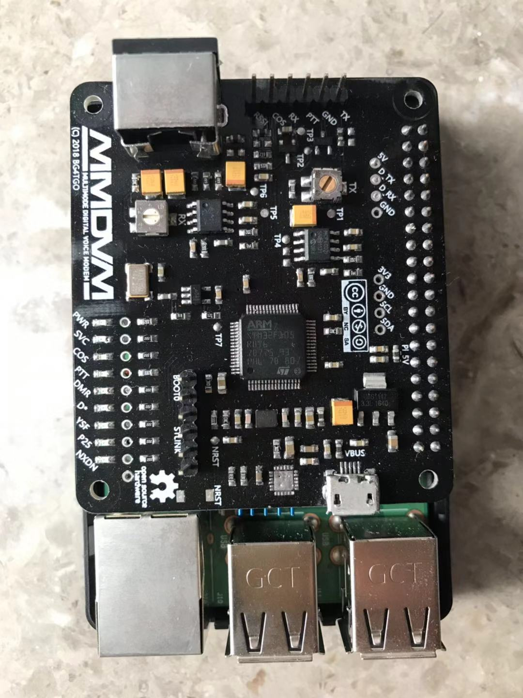
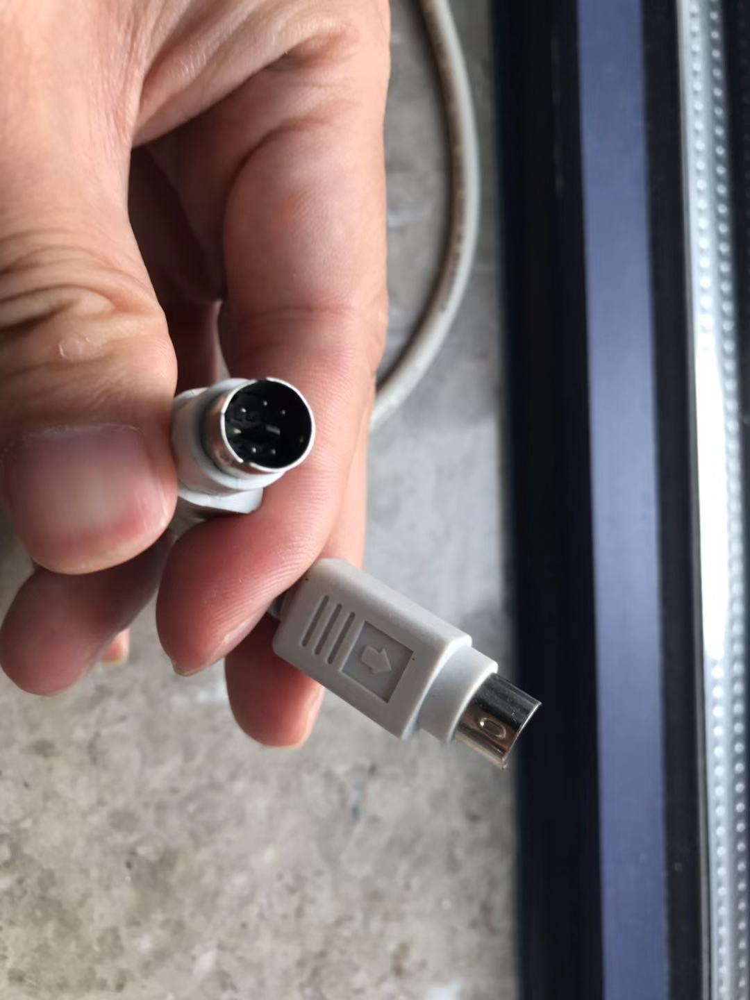
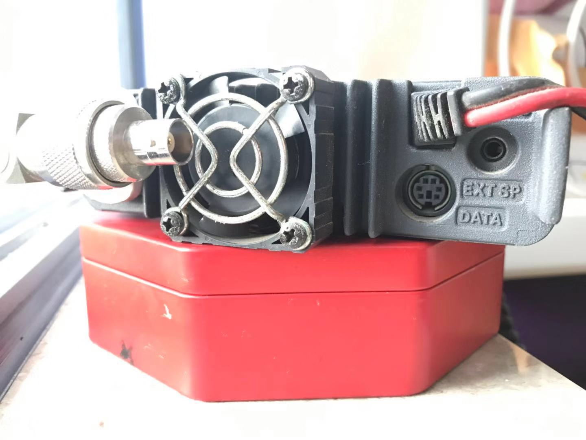
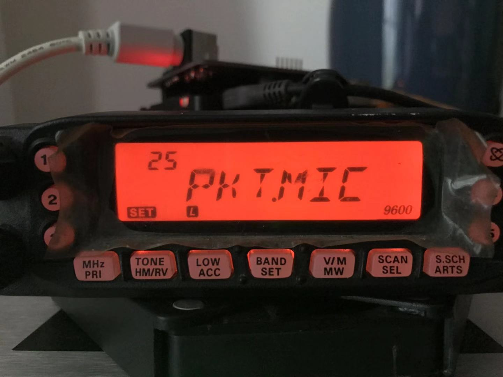
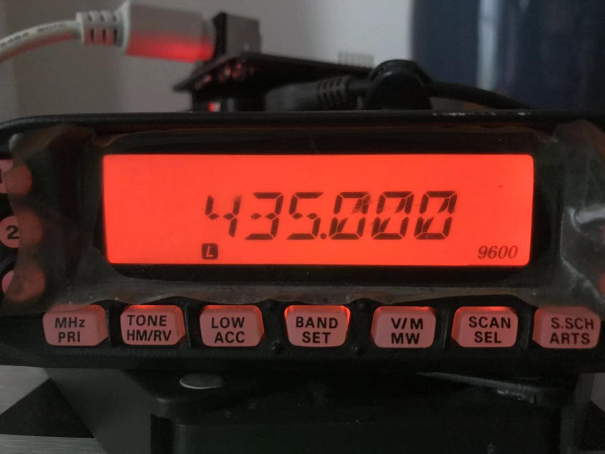
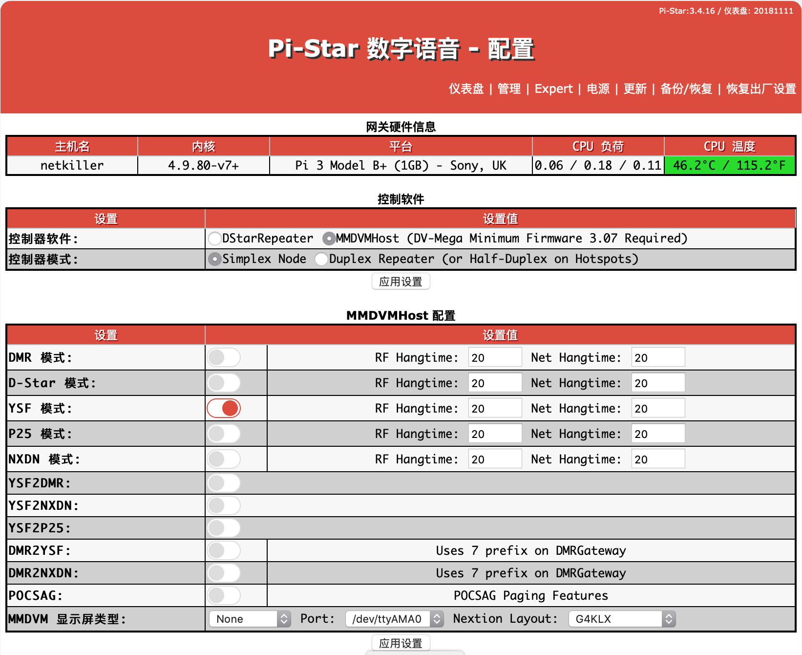
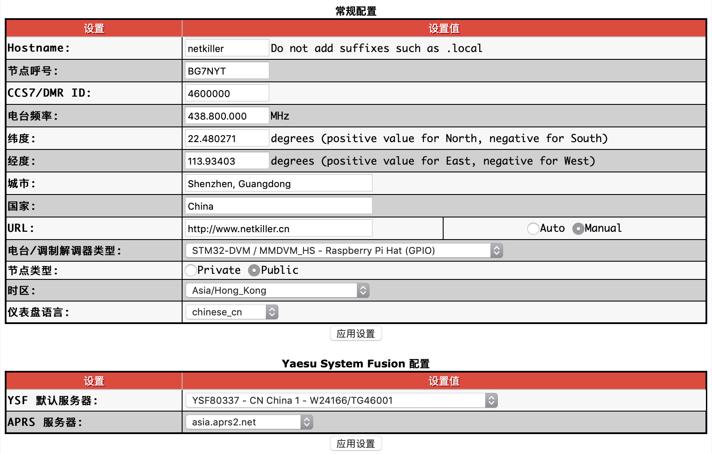
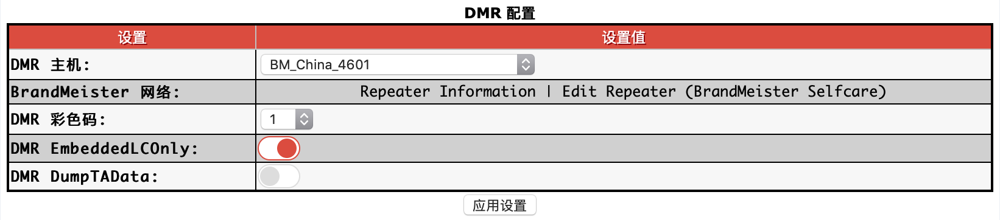

设备列表
- Yaesu FT-7800
- MMDVM 中继板
- 树莓派 + 电源不低于2.1A
- PS2
- 网线一条
中继板插入树莓派 GPIO
|  |
PS2 电缆插FT-7800一端可以需要小小改造，否则无法插到底部
|  |
电台后面的 Data 口
|  |
PS2 数据线一端连接 Yaesu FT-7800，另一端连接 MMDVM 中继版
 |
网线与WiFi怎么选择，你首先使用手机搜索一下Wifi 列表，如果你所在的位置 WIFI比较多，建议你使用网线连接。WIFI不稳定就是因为信道冲突导致丢包造成的。所以根据你的网络环境来选择使用WIFI还是网线。
选择一个热点频率，这里使用 435.000
按下 BAND/SET 键，进入 25号菜单 PKT.MIC
|  |
设置为 MIC.OFF 意思是在数传过程中关闭麦克风, 设置后退出
 |
进入 26 好菜单，设置传输率
 |
电台默认是1200，这里需要修改为 9600BPs
 |
设置完成屏幕右下角显示 9600
|  |
现在树莓派连接网线，USB电源线，并启动树莓派。启动过程 MMDVM 板会自检，所有指示灯会依次亮起，并且会发射一次测试信号，可以看到 FT-7800 处于发射状态。
我是用的是 Yaesu FT-2DR 这里就不介绍如何设置了。设置一个频率 435.000 DN 模式即可。
|  |
网上文章很多，这里不详解。
电台频率这个是热点板的设置，对于中继板可设，可不设。当你使用 X 键的时候必须设置，否则不用设置。
|  |
Yaesu System Fusion 配置，选择 FCS00499 - ECHO
FCS00499 回音测试，你说一句话，他会录音，然后回放给你。
首先给 DMR 电台写频，打开 CPS 软件，这里我是使用蓝牙连接。
找到数字通信录，鼠标右键，可以看到菜单
新建单呼 9990，注意：单呼。这是鹦鹉螺回音测试，发射后会录音，然后再回放。
新建组呼 46001 注意：组呼
新建一个信道 Hotspot 9990, 发射接收都是 435.000 联系人姓名选择 鹦鹉螺 9990。这是测试信道。
再新建一个正式使用的信道，435.000 联系人选择 BM China 46001
现在电台部分设置完成，写入保存，电台自动重启，切换到 Hotspot 9990 信道。
MMDVM 设置
|  |
接收不解码的问题：
从仪表盘可以看到自己可能发射，也能看到 MMDVM过来的信号，但是 DMR 只能看到信号📶闪烁，电台没有语音。
解决方法，使用螺丝刀调节 TX 电位器，直到你的电台发出声音位置。每个中继板都不同，没有一个统一的值，我的中继版，顺时针拧到底 DMR 才解码。
发射不解码：
电台按下PPT发射，COS灯不亮，可以尝试调节 RX 电位器。
调试误码率一定要有耐心，很可能今天你调试出 0.0% , 明天一开机又成了 9%。发射的时候，只按PPT不讲话，和讲话的结果也不同。在鹦鹉螺模式调试 0%，回到TG4601就惨目忍睹。我常常遇到这种情况，多总结，多记录，使用概率方法。
首先你要考虑你的中继版主要使用那种模式，是C4FM 还是 DMR。如果只用一种，比较号调，如果多个模式都使用，就要做出平衡。
由于 C4FM 兼容性比较好，设置也比较简单，对误码率要求也不高，10% 仍能正常通联，如果切换到 VW 模式还能改善误码率。所以我们偏重对DMR的兼容调节。
切记，调试误码率一定要注意，你的设备最好不要冷机调试，必须让他工作一段时间，稳定后在慢慢调试，温补晶振也不是万能的。让电台和MMDVM热机 10分钟以上，在此期间你可以随意使用鹦鹉螺回音发射。
![[提示]](/graphics/tip.png) | 提示 |
|---|---|
|
注意：进入工程模式一定要先记录下默认值，然后再调试。 注意：恢复出厂设置并不会恢复工程模式下的设置，所以慎重操作。 |
准备好纸张，相机，进入 FT-7800 工程模式，每次操作建议写在纸上或者相机拍照。我第一次进入没有经验，胡乱调，现在已经不知道初始值了。
第一步：FT-7800 关机，同时按下 Mhz/PRI + BAND/SET + 5(超级频道) 在开机按钮。开机后看到 SETRST 字样。
第二步：按下互联网键（CCTV台标）不放手，依次按下电台下方的 MHz/PRI, TONE/HM/RV, LOW ACC, BAND SET, V/M MW, SCAN SEL, S.SCH ARTS 共7个按键，会发出“滴”的一声，这时便进入了工程模式。
此时屏幕上显示频率，按下互联网键会出现下面菜单，不要松手，使用频道旋钮调参数。
 |
这里可以调节从 MMDVM 过来的误码率。即 MMDVM 发射误码率。小心调试可以调试出 0.0%。
按下 互联网键 不放在按下 BAND键 可以切换到其他菜单。
 |
这里可调电台的发射无码率，但是我没有成功的调整到 0.0%。
剩余的工程菜单有调电压的，亚音频，数字亚音...等等，保持不变。这里我们只调试 REF 和 TUN 即可。
以上结果只是总结出来的，没有关于FT-7800工程模式的文档，不一定科学，大家一起讨论。顺便如果你有 FT-7800的工程模式的默认初始值，请给我一份。
下面是 modom 配置，我没有修改，保持 pi-star 默认配置即可。另外RXOffset，TXOffset的设置对于中继板是无效的。
 |
我最初非常想使用VHF玩 MMDVM，拿到板子后，设置好 VHF 频率，就开始调试，折腾到凌晨2点没有成功，只能接收，无法发射（发射 COS灯不亮）。一度怀疑MMDVM板子有问题。最后偶然切换到 UHF 一切正常。
经过测试 FT-7800 不能在 VHF 上使用 9600 发射，但是可以接收。
有 FT-8800，FT-8900 的同学帮忙测试一下，在 VHF 上是否可以工作，如果可以请告诉我一声。
有 FT-991A 的同学也可以测试一下是否能在 50Mhz, 29Mhz 上玩 MMDVM。